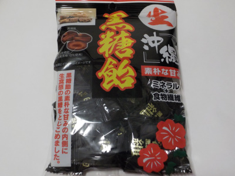

オークラ製菓の生沖縄黒糖飴
2023/07/15

最初食べた時、黒糖饅頭っぽい味がする飴だなと思いました。なめてるうちに中から黒砂糖が出てきて黒糖らしい味になりました。
味変ですね。
普段飴は噛んで食べたりしますが、この飴は最後に黒糖を食べたいので、噛まずに食べるようにしています。
この商品は海藻粉末が入ってて、ミネラル+食物繊維があるようです。いいアイデアですね。なんかとっても健康的な感じがしました。
熊本県熊本市南区護藤町861番地6
2023/07/15

最初食べた時、黒糖饅頭っぽい味がする飴だなと思いました。なめてるうちに中から黒砂糖が出てきて黒糖らしい味になりました。
味変ですね。
普段飴は噛んで食べたりしますが、この飴は最後に黒糖を食べたいので、噛まずに食べるようにしています。
この商品は海藻粉末が入ってて、ミネラル+食物繊維があるようです。いいアイデアですね。なんかとっても健康的な感じがしました。